Ph.D student in Phonetics
东广岛 · 日本广岛
我的研究方向为韵律与语音变异。核心关注韵律作为一种认知资源，是如何被语言使用者调用与解读，并在跨语言、跨方言的比较框架下考察这类韵律策略的分布与功能。在语音变异方面，我主要研究通泰方言的颤音：通泰方言颤音的产出具有高度不稳定性，倾向于在低元音后出现，并表现出代际与性别差异。现阶段我借助贝叶斯建模，解析多重因素对颤音实现的共同影响。
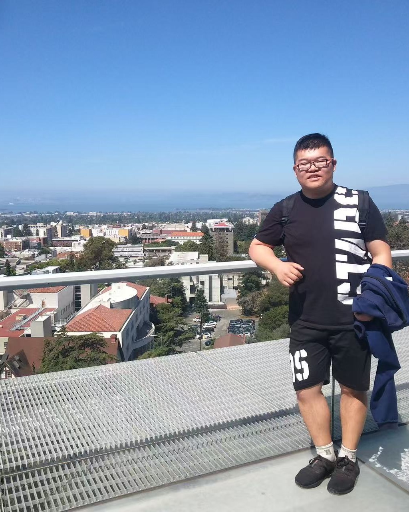
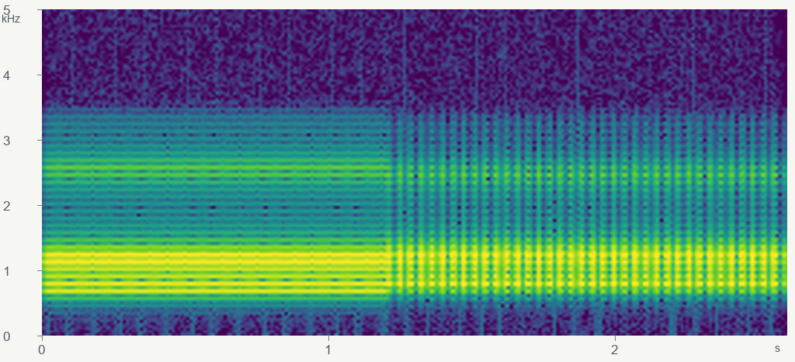
广岛大学语音学博士生，研究方向为韵律与语用交互、言语感知与社会变异语音学。
本科毕业于江苏师范大学，获英语学士学位；硕士毕业于南京航空航天大学，获语言学硕士学位。现于广岛大学人文社会科学研究科山根典子（Yamane Noriko）实验室攻读语音学博士学位。
我的核心研究方向是韵律与语用的交互，同时关注言语感知与社会变异语音学。熟练使用 Praat、Python、R、E-Prime，主要采用 GAMM、贝叶斯统计模型开展数据分析。工作语言为汉语、英语；日语可听说读写，暂无法独立完成学术写作；德语 A2 水平。
My research centers on two directions: the prosody–pragmatics interface and phonetic variation in trill consonants.
Examining how prosody is recruited and interpreted as a cognitive resource by language users, and how it interacts with pragmatic meaning—analyzing, from a cross-linguistic and cross-dialectal perspective, how prosodic strategies shape utterance meaning and information structure.
More details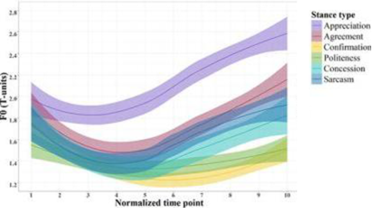
Studying the production and phonetic variation of trills in languages such as the Tongtai dialects: trill production is highly unstable, tends to occur after low vowels, and shows intergenerational and gender differences; I currently use Bayesian modeling to analyze how multiple factors jointly shape trill realization.
More details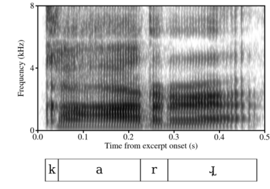
已收录的论文与会议报告。点「显示更多」可查看全部。
Makino, Toko · Yamane, Noriko · Wu, Siyu
Proceedings of the International Symposium on Applied Phonetics (ISAPh 2026)
Wu, Siyu · Yamane, Noriko
International Symposium on Applied Phonetics (ISAPh 2026)
Wu, Siyu · Zhang, Liang · Wang, Zhengxin · Xu, Yizhong
Proceedings of Frontiers in Artificial Intelligence and Applications (IOS Press)
He, Ying · Wu, Siyu
Proceedings of the Asian Conference on Education (ACE2024), IAFOR
Wu, Siyu
186th Meeting of the Acoustical Society of America (Ottawa, Canada)
从本科、硕士到博士三个阶段的教育与研究经历。
学术合作、讨论或任何想聊的话题，欢迎联系。
兴趣爱好、游戏 Mod、宠物与照片——这些是我学术之外的色彩。每个板块都在随时更新，旧内容保留在「显示更多」里。
学术之外的生活色彩。
写的是《岳阳楼记》。江湖书法，自娱自乐！
我很喜欢日本动漫，但已经许多年没有看过了。目前只看《无职转生》，这是我最喜欢的作品。
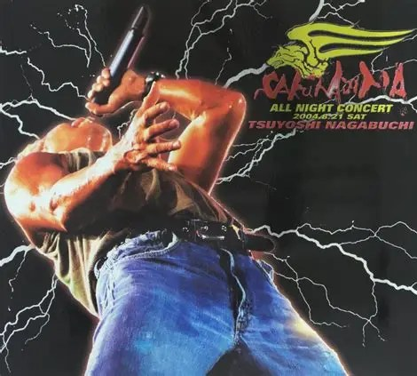
最喜欢长渕刚（Nagabuchi Tsuyoshi）。他的歌非常有力量，让人回味苦涩的同时充满斗志。
第一篇文章正在写作中，敬请期待。
我自己制作的游戏内容：用语言学的视角做游戏模组，也写各种游戏脚本。
新增语言学技能（0–3 级）与两本可阅读书籍：《An Introduction to Language》可将技能升至 2 级，2 级升 3 级需阅读《A Course in Linguistics》。语言学技能对魅力、辩论、写作有巨额加成。当前到 3 级，后续将扩展至 10 级、加入更多语言学书籍，并纳入大学 DLC 与职业路径。持续更新中。
开发《模拟人生》Mod 涉及模块较多、测试流程较长，整体比较复杂、耗时较久；新内容会分批更新，敬请期待。
降低原版 ER 疾病出现频率，新增 66 种疾病，其中含 10 种语言学梗疾病：花园路径综合征、中心嵌套溢出、岛屿约束违例、语迹丢失综合征、麦格克眩晕、首音互换综合征、元音大推移综合征、舌尖颤音过劳、语义饱和症、三声变调失序。
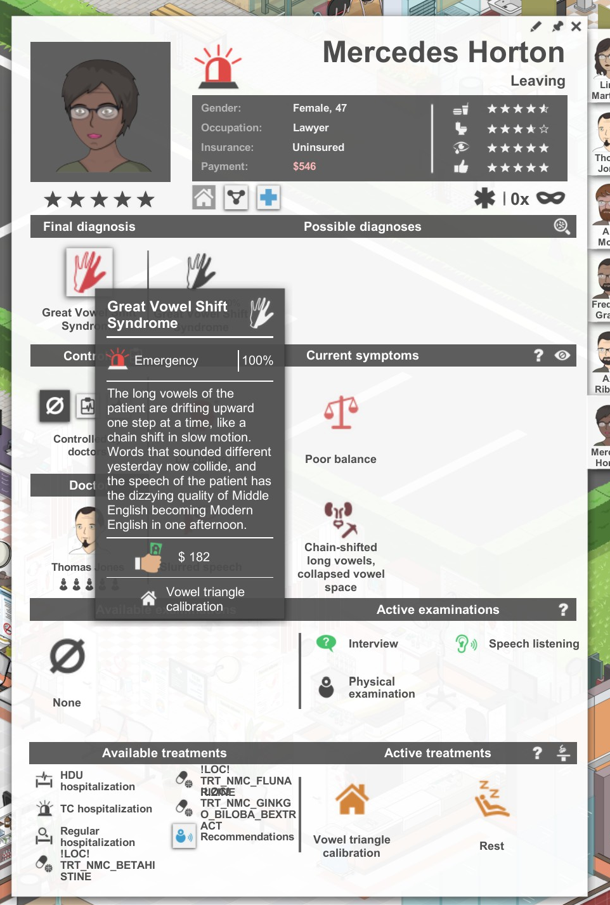
理论梗花园路径句、最小附着原则
症状意识混乱 60% · 头痛 50% · 过劳 40% · 恶心 35%
确诊评估 → 晚闭合歧义下回溯重分析失败（最小附着被强制锁定）
治疗逗号注射（在歧义点补标点）、韵律断句疗法
理论梗递归、依存局域成本
症状头晕 65% · 意识混乱 55% · 出汗 40% · 晕厥 15%
确诊神经系统检查 → 三重中心嵌套下语法栈溢出（依存局域成本超限）
治疗句法扁平化（拆成短句）、工作记忆栈清空
理论梗Ross 的岛屿约束
症状头痛 55% · 恶心 45% · 意识混乱 40% · 易怒 40%
确诊评估 + 言语倾听 → wh 语迹跨越复杂名词短语岛（子邻接条件阻断）
治疗复指代词挽救疗法（用代词「救出」被困成分）
理论梗Grodzinsky 的语迹删除假说
症状意识混乱 55% · 头晕 50% · 言语不清 40% · 焦虑 35%
确诊神经系统检查 + 言语倾听 → 被动句 NP 移位语迹缺失，题元角色指派反转（施受混淆）
治疗映射疗法（把成分重新映射回题元角色）
理论梗视听整合的麦格克效应
症状头晕 80% · 恶心 60% · 视力模糊 45% · 平衡感差 40% · 耳鸣 35%
确诊神经系统检查 + 耳部检查 → 视听整合冲突：听 /ba/ 加看 /ga/ 感知为 /da/
治疗闭眼聆听疗法、抗组胺药
理论梗斯普纳口误、Fromkin 口误库
症状言语不清 65% · 焦虑 55% · 出汗 40% · 易怒 30%
确诊言语倾听 → 音节首辅音同位置换位（如 a half-formed wish 说成 a half-warmed fish）
治疗逆序复述疗法、抗焦虑药
理论梗元音大推移
症状头晕 70% · 言语不清 60% · 平衡感差 45% · 乏力 40% · 意识混乱 30%
确诊神经系统检查 + 言语倾听 → 长元音链式上移，F1/F2 元音空间面积塌缩
治疗元音三角校准（i/a/u 定点复述）、休息
理论梗颤音（我的研究方向）
症状过劳 65% · 咽喉痛 50% · 震颤 40% · 声音嘶哑 40% · 肌肉疼痛 35%
确诊喉镜 + 言语倾听 → 舌尖颤动周期偏离 25–35 ms 常模，气动-弹性振动失稳
治疗伯努利气流调节、休息
理论梗重复一个词后词义消失
症状意识混乱 50% · 焦虑 55% · 头晕 45% · 恶心 30%
确诊评估 + 言语倾听 → 重复复述后词义激活衰减
治疗同义词替换疗法、镇静药
理论梗连读变调（上声 + 上声）
症状言语不清 50% · 声音嘶哑 40% · 焦虑 40% · 咽喉痛 35% · 头痛 30%
确诊言语倾听 + 喉镜 → 连续上声变调失败（T3 T3 应变 T2 T3），基频轮廓错位
治疗音高爬坡训练
我的两只猫。
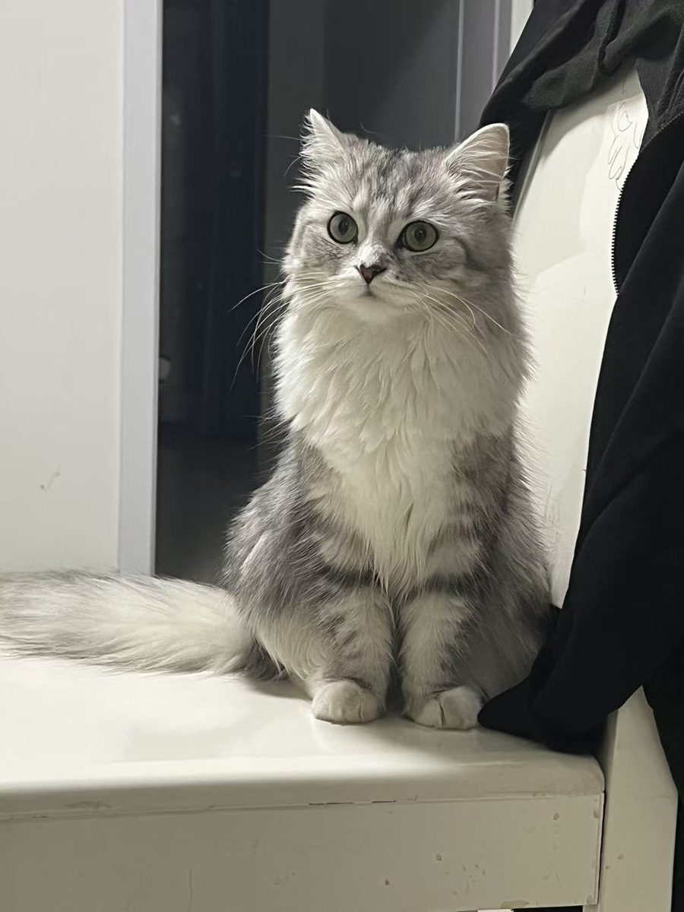
小母猫，2024 年 8 月 6 日出生，妈妈是布偶，爸爸是美短。2026 年 3 月 Juliet 到家后，她离家出走，再也没有回来。
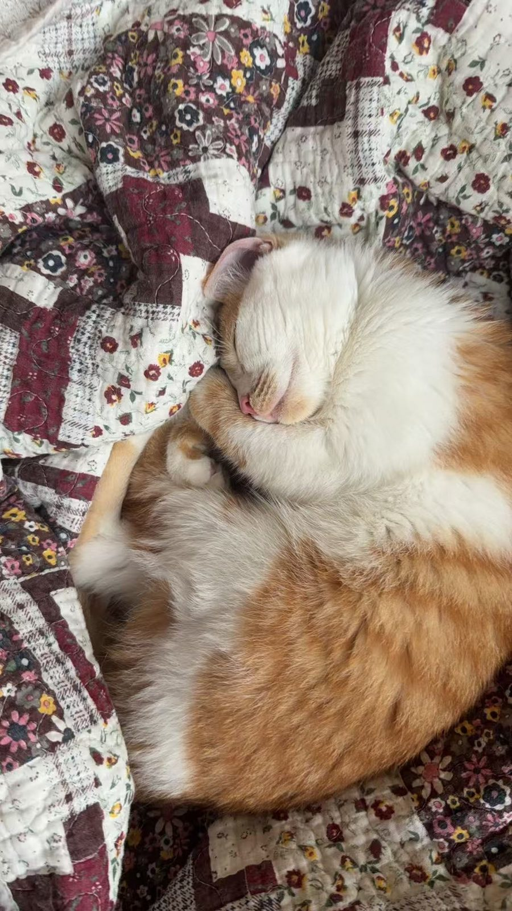
公猫，中华田园猫，2026 年 1 月 12 日出生。汉语里的「橘」和 Ju 谐音，因此取名 Juliet。
生活与研究的影像记录。
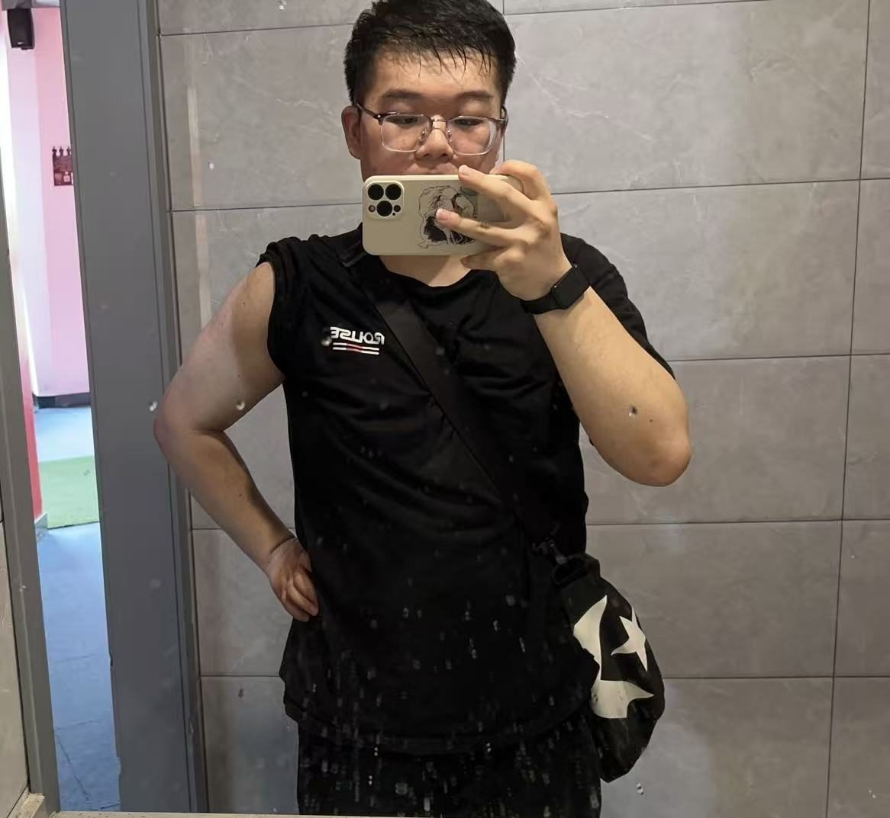
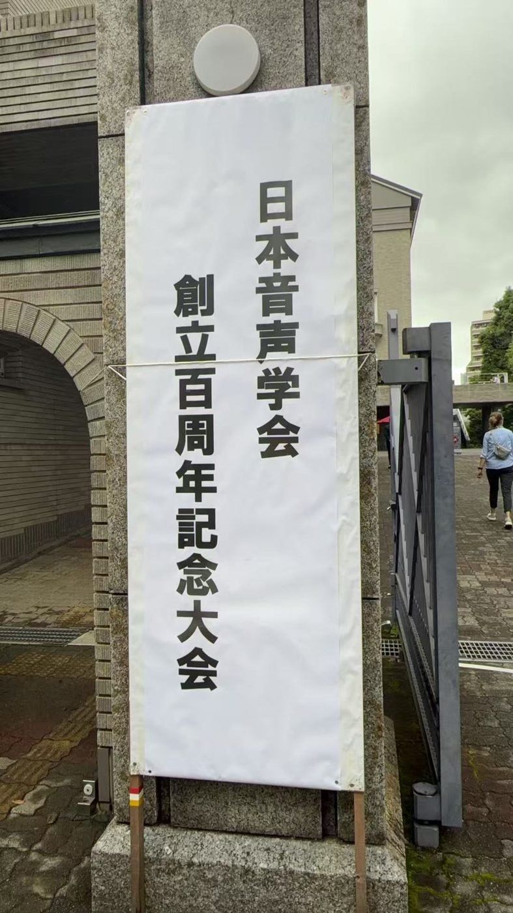
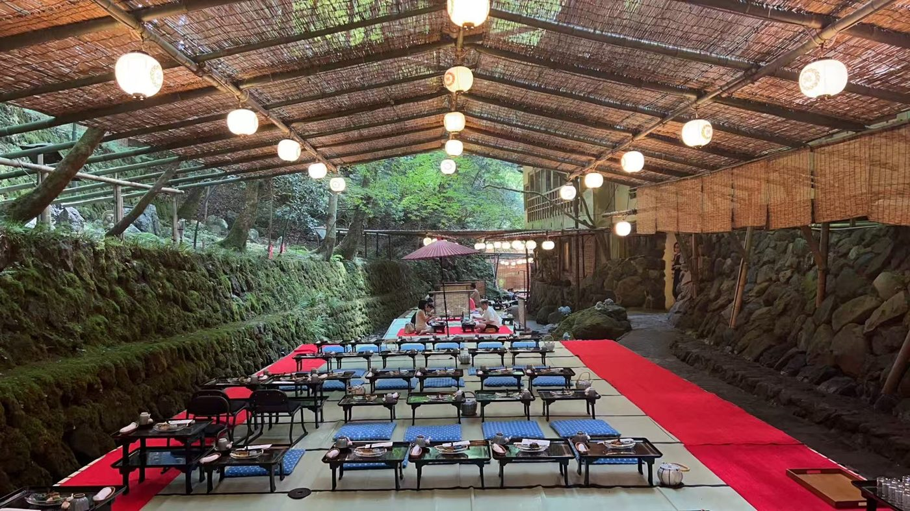
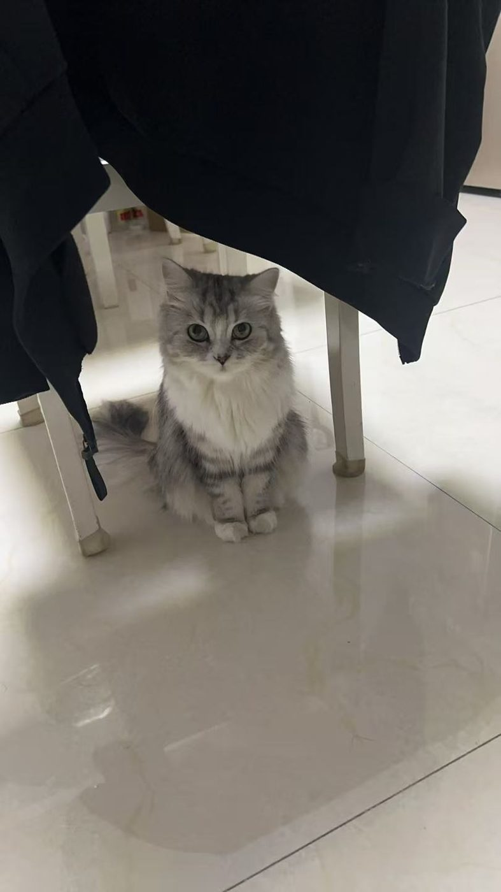
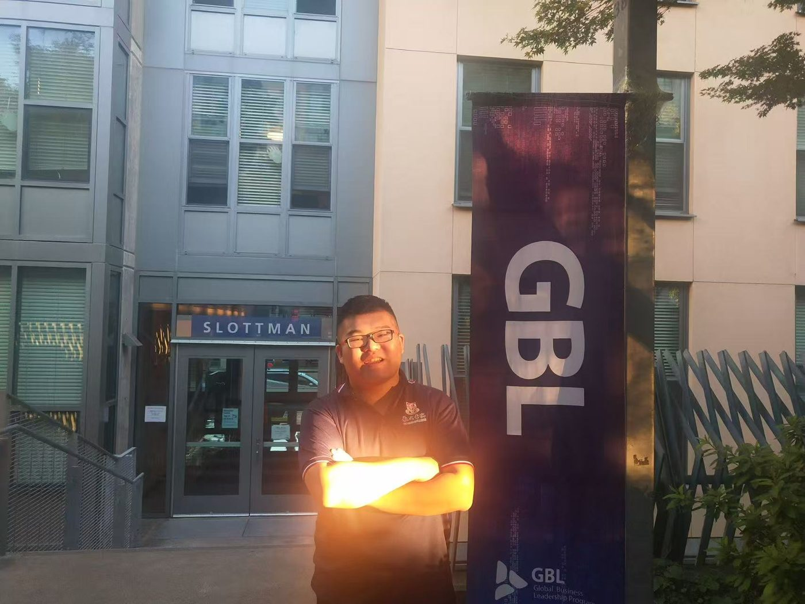
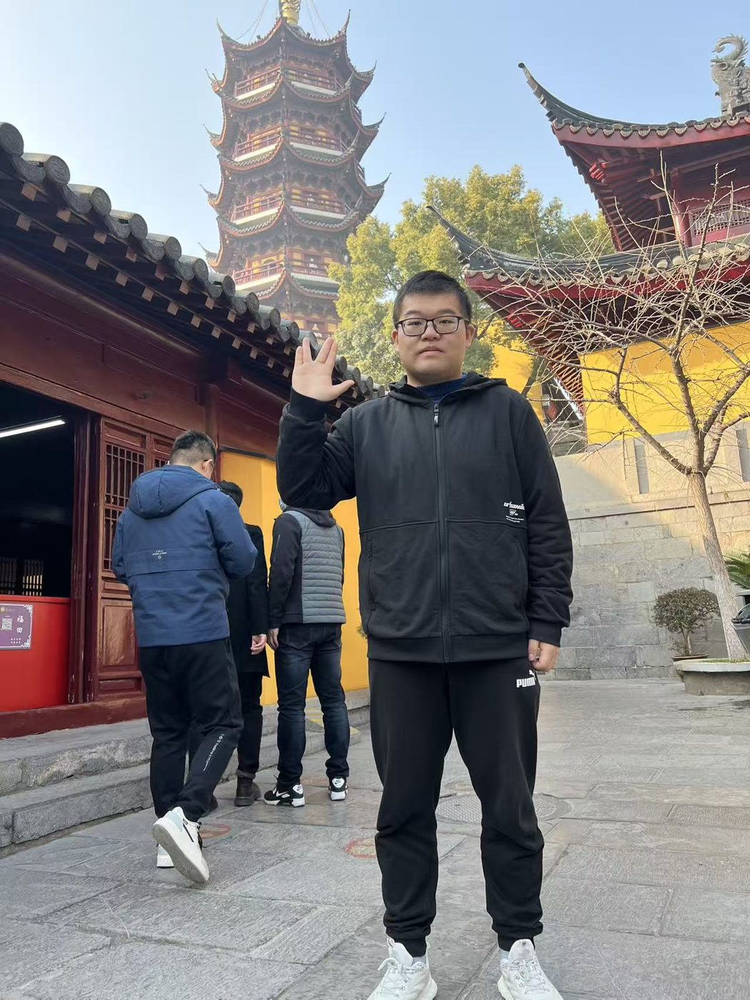
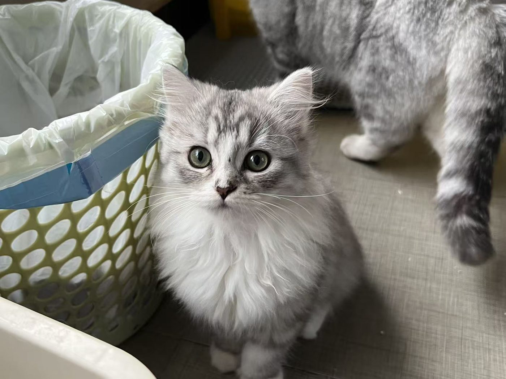
My research is situated at the interface between prosody and pragmatics. Two broad traditions have emerged in the study of pitch patterns: one treats pitch as a phonological object assigned grammatical meanings within formal phonology; the other embeds pitch in conversation, treating prosodic variation as a situated conversational resource within Conversation Analysis. My work proceeds along a third route—adopting a quantitative, experimental-phonetic methodology to uncover empirically how prosodic patterns, above all pitch, participate in conversational interpretation, while bringing the tools of formal pragmatics to bear on response particles and interjective stance markers, so that phonetic findings and formal accounts inform each other.
The work forms a coherent experimental series on Mandarin monosyllabic pragmatic particles: first, the interjection hao 好 and how prosody encodes stance-taking in a tonal language; then the negative response word bu 不, following a theoretical-and-experimental structure with the full formal-pragmatic derivations of particle interchangeability.
Stance—attitudes and opinions about the topic of discussion—is manifested in various aspects of verbal communication, and one of the most important things we do with words is to take a stance. Previous research on the phonetics of stance-taking has predominantly focused on non-tonal languages; comparatively little attention has been paid to tonal languages. This study examines the prosodic features of stance-taking in hao, a Mandarin secondary interjection that is lexically positive but capable of expressing a wide range of stances. The study addresses two research questions: (i) What are the acoustic-prosodic features of hao across its six stance types? and (ii) What are the similarities and differences between the phonetic realization of stance-taking in non-tonal and tonal languages, by the examples of English and Mandarin?
Theoretically, the interjection hao encompasses six stance types: Appreciation, Agreement, Confirmation, Politeness, Concession, and Sarcasm. Appreciation, Agreement, and Confirmation represent positive stance, whereas Politeness, Concession, and Sarcasm denote negative stance. The order of stance strength is: Appreciation > Agreement > Confirmation, and Sarcasm > Concession > Politeness. Note that stance strength here is defined across stance types, rather than within a single type.
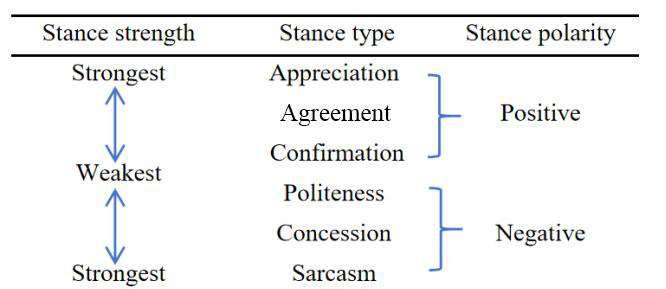
Fifteen native Mandarin speakers (9 males, 6 females, aged 21–25) participated in a controlled production experiment. Eighteen scenarios (three per stance type), revised from the BCC and CCL corpora, were adapted into dialogues in which hao always occurs in utterance-initial position. Recordings were digitized at 44.1 kHz / 16-bit in Praat. Mean F0, F0 range, mean intensity, and duration were extracted; F0 and intensity were sampled from the vowel at ten equidistant points, and duration from the syllable. All F0 values, including point data, were transformed into T-values for cross-speaker normalization appropriate to tonal data: T = ((log(TargetHz) − log(min)) / (log(max) − log(min))) × 5. Intensity was scaled to 70 dB. Time-normalized F0 and intensity contours were extracted using ProsodyPro. Point data across the six stance types were analysed in R with linear mixed-effects models (LMMs, lmerTest), with stance type and gender as fixed effects and speaker as random effect; Tukey post hoc tests were conducted, and contours were drawn with 95% confidence intervals, where non-overlap indicates a significant difference.
The LMMs revealed systematic prosodic marking for stance polarity and stance strength. For mean F0, there was a significant main effect of stance type [F(5, 242) = 19.07, p < 0.001]: Appreciation was significantly higher than the other five types, Agreement was higher than Confirmation and Politeness, and Sarcasm was higher than Confirmation and Politeness. For F0 range [F(5, 242) = 6.350, p < 0.001], Confirmation and Politeness had narrower ranges than Appreciation, Agreement, and Sarcasm. For duration [F(5, 242) = 25.998, p < 0.001], Concession and Sarcasm were robustly marked by syllable lengthening. For mean intensity [F(5, 242) = 8.559, p < 0.001], Appreciation and Sarcasm were marked by increased intensity. Overall, Appreciation, Agreement, Concession, and Sarcasm are prosodically marked forms, while Confirmation and Politeness are unmarked.
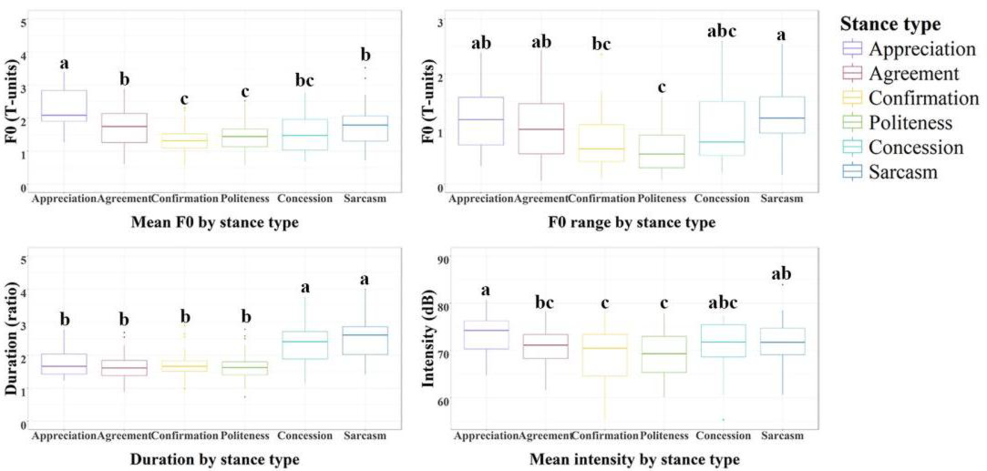
Examination of the time-normalized F0 contours (Figure 3) reveals tone variation driven by emotional factors and pragmaticalization. All contours are dipping in shape, sharing an initial decline followed by a rise, but with notable differences. The positive stances Appreciation and Agreement exhibit brief-to-moderate declines followed by substantial rises, with Appreciation consistently higher in global F0. The negative stances Concession and Sarcasm show approximately congruent dipping contours, with Sarcasm's inflection point occurring slightly earlier and its endpoint slightly higher. By contrast, the pragmaticalized neutral uses Confirmation and Politeness show compressed, low-flat tonal shapes: Confirmation's contour declines dramatically with the inflection point furthest to the right and a final rise that remains much lower than other types, while Politeness stays relatively flat with a slight dip and a gradual, steady rise that ends at the same location as Confirmation. A canonical full L (third) tone exhibits a dipping contour (214) in isolation but is shortened to low and flat in natural speech; here, the flattened contours of Confirmation and Politeness reflect phonological reduction associated with pragmaticalization.
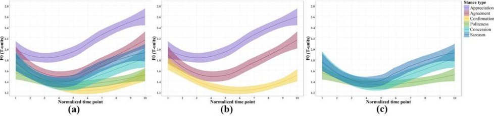
The intensity contours (Figure 4) show that all stance types reach their peak around the middle of the utterance, yielding dome-shaped trajectories—except for Sarcasm. Among the positive stances, Appreciation shows the highest intensity throughout, Agreement occupies a middle position, and Confirmation has the lowest intensity, with its contour completely overlapped with Politeness. The pattern of Sarcasm is unique: it exhibits the latest and highest maximum intensity location. In its initial segment it grows like the other categories until roughly normalized time points 5–6, then ascends more precipitously than Concession to a secondary peak while the other contours begin their descent. Thus, although Concession and Sarcasm are statistically indistinguishable in point data and have highly similar F0 trajectories, their intensity contours differentiate them in detail, with Sarcasm's delayed, late intensity peak serving as a critical distinguishing cue.
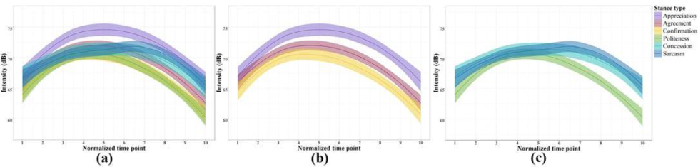
Because Confirmation and Politeness fail to achieve sufficient elevation in their F0 rises, their contours do not retain the canonical third-tone final rise, exhibiting instead a low, flat shape. The source of this tone variation appears semantic: Appreciation and Agreement maintain a close relationship with the original positive meaning; Concession and Sarcasm convey opposite meanings through prosodic lengthening; and Confirmation and Politeness are more susceptible to semantic reduction, functioning primarily as formulaic sequences. Pragmaticalization is typically accompanied by phonological reduction, manifested here as lower main pitch and reduced F0 targets for final rises. The nearly identical contours of Confirmation and Politeness (Figure 5), together with the low recognition accuracy of Politeness, provide substantial evidence for a neutral stance that previous studies had not considered. Stances are therefore classified as positive, neutral, and negative.
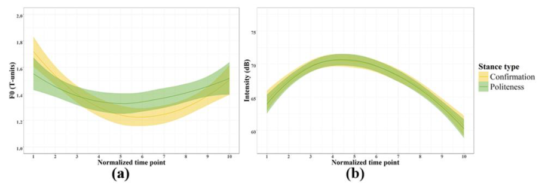
The findings highlight typological divergence between tonal and non-tonal languages. English primarily uses duration and intensity to distinguish stance types, with F0 indicating stance strength and polarity; by contrast, Mandarin employs F0 to distinguish fine-grained stance types, with F0 serving as a primary acoustic parameter alongside duration. The languages also differ in their use of duration: English speakers mark positive stance by lengthening, whereas in Mandarin lengthening exclusively signals negative stance. Given that hao is semantically positive, it cannot express a negative stance without prosodic or contextual hints. Lengthening therefore functions as a type of markedness that provides the pragmatic hints necessary in the ostensive-inferential process, either intensifying or reversing the literal meaning. These findings deepen our understanding of how tonal languages prosodically encode stance-taking and provide theoretical insights for identifying stance information in natural speech.
Whether a speaker uses yes or no in response to a polar question (PQ) depends on one's real intentions. In responding to a positive polar question such as (1), yes confirms arrival while no denies it, and only the expected pairings are felicitous.
(1)A: Are you coming to the party?
a. B: Yes, I am. b. B: #No, I am.
c. B: #Yes, I am not. d. B: No, I am not.
One notable property of polar particles, however, is that it is free to use positive or negative polar particles when answering negative polar questions, as in (2).
(2)A: Are you not coming to the party?
a. B: Yes, I am. b. B: No, I am.
c. B: Yes, I am not. d. B: No, I am not.
Negative questions are only felicitous in the presence of contextual evidence for the negative answer. Answers such as (2b) are called double negation (DN) interpretations, and answers such as (2c) negative concord (NC) interpretations. This phenomenon is often called interchangeability. Previous research has primarily focused on English, with limited attention to Chinese. Consider (3):
(3)A: Ta bu lai-le-ma? ‘Is he not coming?’
a. B: #Dui, lai-ne. ‘Yes, he is coming.’
b. B: Bu, lai-ne. ‘No, he is coming.’
c. B: Dui, bu lai. ‘Yes, he is not coming.’
d. B: Bu, bu lai. ‘No, he is not coming.’
It can be seen that the combination of a positive polar particle with a positive answer is infelicitous in Chinese, in contrast to English, where such responses are perfectly natural. People also prefer the DN interpretation over the NC interpretation in Chinese, again contrasting with English, which prefers NC over DN. This may highlight a language-specific restriction and urges us to revise existing accounts of interchangeability.
Several theorists have sought to provide overarching explanations for interchangeability, attributing it to different formal mechanisms. I review these before presenting my own revision.
Krifka (2013): propositional anaphora. Krifka argues that negative sentences introduce multiple antecedents for yes and no to pick up. Yes and no are propositional anaphora that stand in semantically for entire speech acts (the category Krifka calls ActP). A positive polar question makes available a single discourse referent d anchored to the TP, as in (5); in a negative polar question, two antecedents become available—d anchored to the embedded TP and d′ anchored to the NegP, as in (6).
(5)Is Jane coming?
simplified LF: [TP Jane is coming] ↦ d
a. Yes = assert (d) [meaning: Jane is coming]
b. No = assert (¬d) [meaning: Jane is not coming]
(6)Is Jane not coming?
simplified LF: [NegP not [TP Jane is coming]] ↦ d′ ↦ d
a. (i) Yes = assert (d) [meaning: Jane is coming]
(ii) No = assert (¬d) [meaning: Jane is not coming]
b. (i) Yes = assert (d′) [meaning: Jane is not coming]
(ii) No = assert (¬d′) [meaning: Jane is coming]
In (6a), yes asserts d and no asserts its negation; in (6b), yes asserts d′ (equivalent to ¬d) and no asserts its negation. Under this analysis, interchangeability in negative contexts follows from the availability of two discourse referents.
Kramer and Rawlins (2009). Building on Laka (1990), K&R treat yes and no as adverbs in the specifier of a functional polarity head in the left periphery, with bare particles analysed as fragment answers. The use of no is constrained in that it can only occur if the following, optionally elided, sentence contains negation: no carries an uninterpretable negative feature (uNeg) that must enter a negative concord chain with an interpretable negative feature (iNeg). Yes does not contribute any features and is unconstrained by the polarity of the following sentence, as shown in (7) and (8).
(7)/(8)A: Is Jane not[iNeg] coming?
a. B: [PolP No[uNeg] [She is not[iNeg] coming]]
b. B: [PolP Yes [TP She is not[iNeg] coming]]
Both particles are therefore predicted to be acceptable in negative responses to negative questions. One issue is that this account only deals with one half of the interchangeability phenomenon, negative answers; and because yes imposes no syntactic requirement, nothing stops yes from appearing in negative responses to positive questions, contrary to fact (10).
(10)A: Is Jane coming?
a. B: [PolP Yes [TP She is not[iNeg] coming]]
Holmberg (2013; 2016). Like K&R, Holmberg treats yes and no as specifiers of a functional projection, and analyses bare particles as fragment answers. Yes and no are operators that assign positive and negative values, respectively, to the polarity head of their complement. The polarity head contains a polarity variable that can take one of three values: Positive [+], negative [−], and open [±]. Positive polar questions have open polarity (11). Holmberg locates the source of interchangeability in a structural ambiguity: negation in English attaches at two different heights—high negation between TP and vP, and low negation adjoined to vP/VP (12).
(11)A: Is[±] Jane coming?
a. B: [FocP Yes [PolP [+] [TP She is coming]]]
b. B: [FocP No [PolP [−] [TP She is not coming]]]
(12)Structure for ‘Is Jane not coming?’
a. A: Is[±] Jane coming? (low-negation PQ)
(i) B: [FocP Yes [PolP [+] [TP She is [vP not coming]]]]
(ii) B: [FocP No [PolP [−] [TP She is [vP not coming]]]]
b. A: Is Jane not[−] coming? (high-negation PQ)
(i) B: [FocP Yes [PolP [+] [TP She is coming]]]
(ii) B: [FocP No [PolP [−] [TP She is not coming]]]
The structural ambiguity of the two attachment heights of negation is what makes yes and no interchangeable in negative contexts in this account.
Roelofsen and Farkas (2015). Unlike the accounts above, R&F attribute interchangeability to the ability of polarity particles to encode two types of features: absolute polarity features ([+] and [−]) and relative discourse features ([agree] and [reverse]). Yes is capable of realizing [+] or [agree]; no is capable of realizing [−] or [reverse]. Only one of the features it realizes needs to be present to license the particle. The system is demonstrated in (13) and (14).
(13)A: Petra passed the test.
a. B: Yes / #No, she did. [agree, +]
b. B: #Yes / No, she didn't. [reverse, −]
(14)A: Petra didn't pass the test.
a. B: Yes / No, she didn't. [agree, −]
b. B: Yes / No, she DID. [reverse, +]
In response to negative sentences, the two valid responses in (14) contain features that can be realized by either particle, so either particle can be used in either response—this is how R&F explain interchangeability.
Considering the Chinese facts in (3), there is reason to doubt the effectiveness of a purely semantic or syntactic analysis. It is important to include presuppositions in the analysis. In (15), when the presupposition is not coming, the acceptability of the responses is the same as for simple questions, meaning that it is the structure of negative questions, not the presuppositions, that causes interchangeability.
(15)A: Ta hai lai-ma? ‘Is he still coming?’ (speaker presupposes he would not come)
a. B: Dui, lai-ne. ‘Yes, he is coming.’
b. B: #Bu, lai-ne. ‘No, he is coming.’
c. B: #Dui, bu lai. ‘Yes, he is not coming.’
d. B: Bu, bu lai. ‘No, he is not coming.’
Nevertheless, presuppositions play a key role in analysing interchangeability. My revised analysis is given in (16). I suppose that when the response agrees ([+]) with the questioner's presuppositions, the language unit being processed could be the TP or NegP in Krifka's (2013) sense; positive or negative particles can only be used to give values to TP or NegP, not to the presuppositions. If the response disagrees ([−]) with the questioner's presuppositions, the language unit being processed could only be NegP.
(16)Is Jane not coming?
simplified LF: [NegP not [TP Jane is coming]] ↦ d′ ↦ d
a. (i) Yes, Jane is coming. [−] (Yes is used to affirm with the presupposition)
(ii) No, Jane is coming. [−] (No is used to negate NegP)
b. (i) Yes, Jane is not coming. [+] (Yes is used to affirm NegP)
(ii) No, Jane is not coming. [+] (No is used to negate TP)
Crucially, since in English yes is more pragmatically interpretable, it can be used to give values to presuppositions; whereas in Chinese dui and bu are not interchangeable. If dui is changed to kending-a 肯定啊 (‘of course’), the particles become interchangeable, as in (17). This evidence tells us that interchangeability is not merely a pragmatic or syntactic issue, but somehow needs insights from lexical semantics.
(17)A: Ta bu lai-le-ma? ‘Is he not coming?’
a. B: Kending-a, lai-a. ‘Of course, he is coming.’
b. B: Kending-a, bu lai-le-a. ‘Of course, he is not coming.’
Despite these differences in interchangeability being attributable to lexical semantics, DN, NC, and SN forms also exist in Chinese. It is still unclear whether they have distinct prosodic features. The next part of this research examines whether these different types of responses are expressed with different prosodies in Chinese, helping to explain how speakers use prosody to convey different meanings when replying to questions.
To obtain the prosodic features of each interpretation, the experiment set a control group—simple negation (SN), the response to simple polar questions. Twenty native Mandarin speakers (10 males, 10 females, aged 18–25) from Jiangsu Province, China, participated; all were screened for speech and hearing disorders and mental health issues, and were verified right-handed. Each stimulus combined a scenario, a conversational prompt, and a targeted single-word response, designed to evoke specific interpretations within realistic contexts. Participants were instructed to pause at a designated point (‘___’) so that acoustic analysis could concentrate specifically on the polar particle, minimizing extraneous prosodic influence. Six items were constructed per condition (SN, NC, DN). Recordings were collected with an AKG 3000 condenser microphone (44.1 kHz / 16-bit) and presented via E-Prime 2; in total, 360 target words (18 items × 20 participants) were recorded. F0 and intensity data were derived from vowels, duration from syllables; F0 was sampled at ten equidistant points, converted to T-values, duration normalized to each speaker's mean, and intensity normalized to 70 dB. Point data were analysed with LMMs with Type (SN/NC/DN) and gender as fixed effects and speaker as random effect; F0 contours were drawn with ggplot2 with 95% confidence intervals.
For mean F0, the LMM showed no significant main effect of Type [F(2, 360) = 0.150, p = 0.861], but a significant main effect of gender (p = 0.011). For F0 range, there was a significant main effect [F(2, 360) = 23.142, p < 0.001]: DN had a broader F0 range (T-units) than NC and SN [β(DN−NC) = 0.660, t = 5.898, p < 0.001; β(DN−SN) = 0.624, t = 5.563, p < 0.001]. For mean intensity [F(2, 360) = 4.253, p = 0.018], SN was lower than DN and NC [β(SN−DN) = −0.587 dB, p = 0.039; β(SN−NC) = −0.670 dB, p = 0.018]. For duration [F(2, 360) = 7.173, p = 0.002], DN had a longer duration than NC and SN [β(DN−SN) = 0.631, p = 0.003; β(DN−NC) = 0.692, p = 0.003]. Taken together, the marked reading DN is characterized by a broader F0 range, higher intensity, and longer duration, whereas SN—and, largely, NC—show more neutral prosodic profiles. The four point-data comparisons are shown in Figures 6–9.
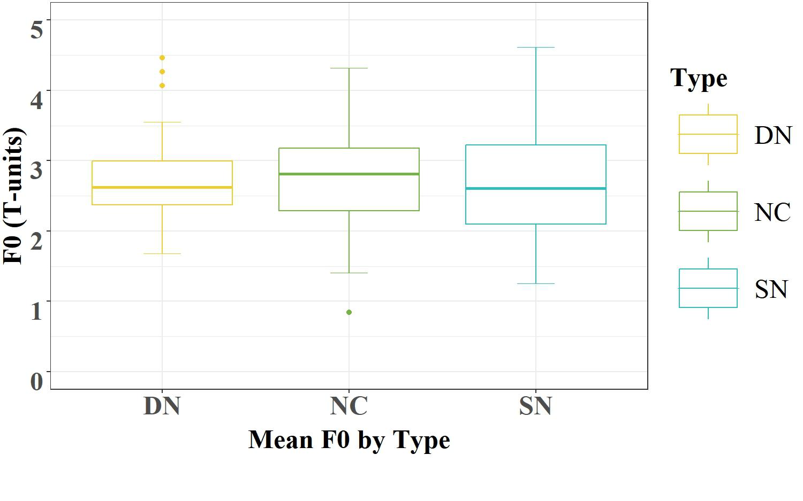
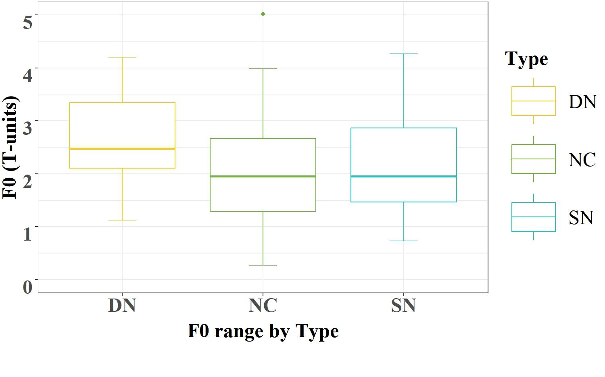
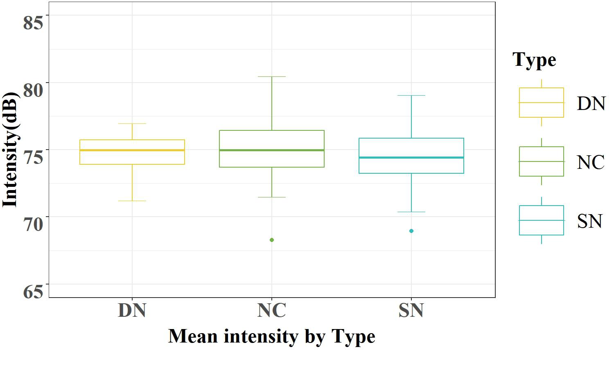
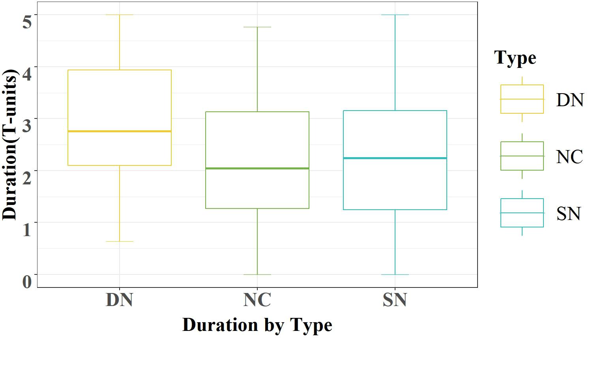
The time-normalized F0 contours of SN, NC, and DN are shown in Figure 10. All three contours represent the falling fourth-tone word bu and are generally similar in overall trend, but differ in specific details. Treating SN as the default contour, NC almost completely overlaps with SN, whereas DN shows significant differences from SN in both the first and second halves: the DN contour is significantly higher than SN before normalized time point 5, after which the two contours coincide, and then DN falls significantly below SN after time point 7. The starting points of the three contours are roughly similar, but they undergo different changes, with SN and NC coinciding at the endpoint, while DN has a lower ending point than both. The broader F0 range of DN is observable only in the contour graph.
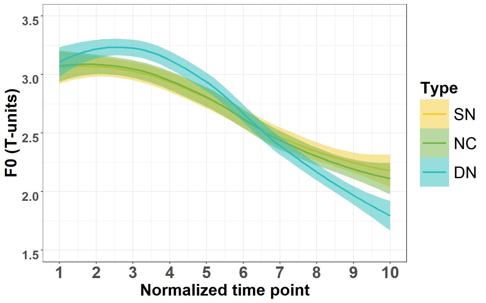
Integrating the experimental findings back into the revised formal-pragmatic account, syntactic structure, presuppositional context, and lexical-semantic properties jointly determine which interpretations are contextually available for bu. Prosody constitutes an independent phonetic layer encoding pragmatic markedness. DN—the marked reading that rejects the presupposition carried by the negative question, operating on NegP—receives robust phonetic highlighting: expanded pitch range, lengthening, and elevated intensity. By contrast, NC operates mainly via grammatical-syntactic negative-concord licensing at the TP level, without extra prosodic prominence, behaving acoustically nearly identically to the baseline SN.
From a cross-linguistic perspective, the most robust and potentially universal cue is the manipulation of pitch: as reported for English, Spanish, and Catalan, the marked interpretation DN is associated with a wider F0 excursion and a more prominent pitch movement, suggesting that pitch modulation may constitute a general prosodic strategy for signaling pragmatic markedness across languages. However, the Mandarin data also reveal language-specific characteristics: in addition to F0 variation, duration and intensity significantly contribute to encoding the interpretational contrasts. Thus, while pitch appears to be a cross-linguistically shared cue for distinguishing marked negative responses, duration and intensity may play a more substantial role in Mandarin Chinese, reflecting language-specific strategies in the prosody–pragmatics interface.
This research series examines how prosodic patterns, primarily pitch, participate in conversational interpretation from an experimental-phonetic and formal-pragmatic perspective. The study of hao shows that Mandarin prioritizes F0 modulation to distinguish fine-grained stance types while deploying duration selectively to mark negative stance, revealing how pragmaticalized uses undergo phonological reduction. The study of bu shows that distinct pragmatic interpretations (SN, NC, DN) map onto distinct prosodic profiles, with the marked DN reading phonetically highlighted by expanded pitch range, lengthening, and elevated intensity. Together, these findings demonstrate that universal prosodic strategies for pragmatic markedness are filtered through language-specific phonetic-phonological systems, and that the prosody–pragmatics interface can be fruitfully studied by combining experimental phonetics with formal pragmatics.
Trills are a central object of phonetic research. My work focuses on the production and phonetic variation of trills in languages such as the Tongtai dialects, exploring their articulatory mechanisms and patterns of variation.
Trill production in the Tongtai dialects is highly unstable: trills tend to occur after low vowels and show clear intergenerational and gender differences. This variation suggests that trill realization is jointly shaped by phonetic context and social factors.
Methodologically, I use Bayesian modeling and generalized additive mixed models (GAMMs) to disentangle the joint effects of multiple factors (phonetic context, age, gender, etc.) on trill realization, with Praat, Python, and R for acoustic analysis and data modeling.